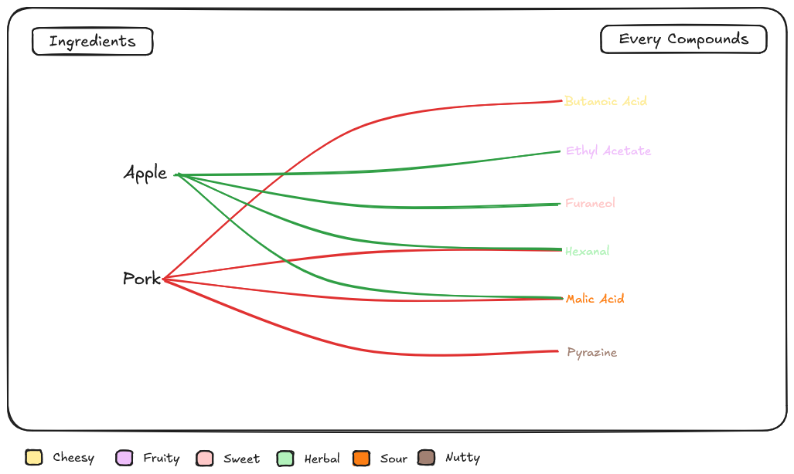

The hidden chemical compounds in food
Ingredients on the left, underlying chemical compounds on the right.

Chemistry of world cuisine
Comparing flavor pairings across global cuisines.

type in an ingredients and discover the best (or worst!) pairings.